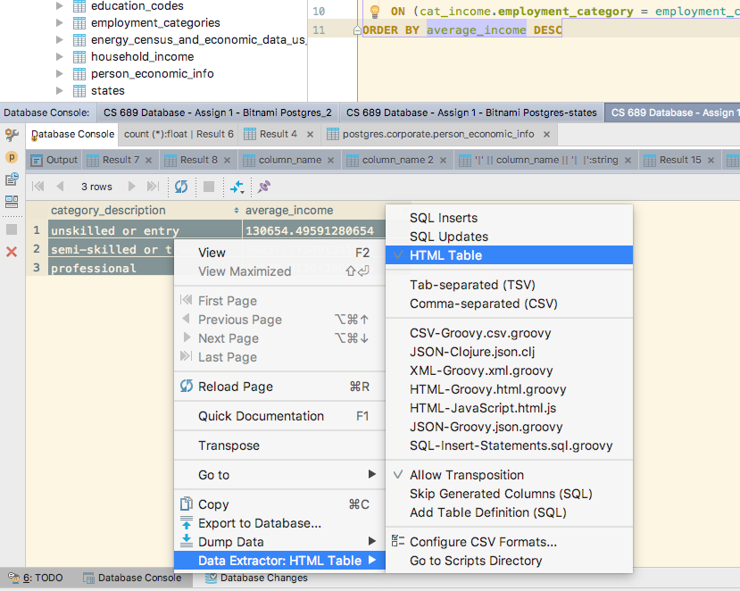
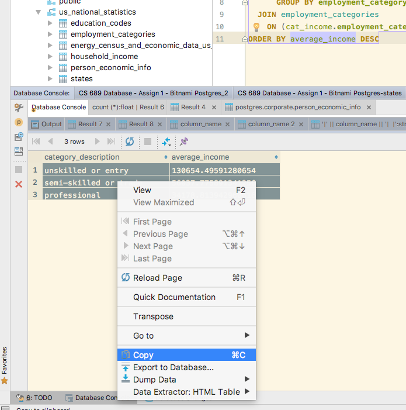

Overview
In your VM, you will find a schema called 'us_national_statistics.' You will be working with tables in this schema as your assignment.
The primary table is person_economic_info. Each row describes a person sampled from that state with that data. It has the following columns:
| column_name | column_description |
|---|---|
| age | person's age in years |
| marital_status | indicates whether the person is married |
| address_state | numeric code refers to 'states' table |
| income | annual income in USD |
| income_category | categorized income |
| car_price | price of car in USD |
| car_price_category | categorized car price |
| education | numeric code refers to education_codes table |
| years_employed | years of continuous employment for person |
| retired | indicates person is retired |
| employment_category | categorizes type of most recent employment for person per employment_categories table |
| gender | 'm' or 'f' for male or female |
| length_at_current_residence | years person has lived at current residence |
| wireless | indicates person owns a wireless phone |
| multiple_lines | indicates person has multiple voice phone lines |
| voice_mail | indicates person has voice mail |
| pager | indicates person has a pager |
| internet | indicates person has a dedicated residential internet connection rather than cellular or dial-up |
| caller_id | indicates person has caller id service on voice line |
| call_waiting | indicates person has call waiting service on voice line |
| own_tv | indicates person owns a television set |
| own_dvd_player | indicates person owns a DVD playerr |
| own_4k_tv | indicates person owns a 4k HD television set |
| own_smartphone | indicates person owns a smartphone |
| own_computer | indicates person owns a personal computer |
| own_fax | indicates person has a fax send/receive device on a phone line |
| read_newspapers | indicates person reads physical newspapers |
Description tables for this table are:
| table name | usage |
|---|---|
| states | translates numeric state codes to actual states |
| employment_categories | translates numeric employment categories to descriptions |
| education_codes | translates numeric education codes to descriptions |
Delivering Your Assignment
To submit your assignment, create a spreadsheet in Excel, Apple Numbers, or OpenOffice/LibreOffice file format.
The first sheet should be named "Assignment Summary" have your name and three columns:
| Question Number | Question text from the assignment | (Analytical) Database Query answering the question | Notes and Explanation |
|---|---|---|---|
| 0 | What is the average income in each employment category? | SELECT employment_categories.category_description, average_income FROM ( SELECT employment_category, avg(income) AS average_income FROM person_economic_info GROUP BY employment_category ) cat_income JOIN employment_categories ON (cat_income.employment_category = employment_categories.employment_category) ORDER BY average_income DESC |
This was put into the example text |
| 1 | ... | ... | ... |
With each question, you will write a query that answers the question. Put the question text and your query into the Assignment Summary, along with any comments required for that question. Then you will put the results of the query/report you create for each question into a new sheet.
Your spreadsheet's summary sheet should look something like this:

To get the results into the spreadsheet, you will need to capture your output from DataGrip in table form. First, ensure you are capturing data in the right format. Right-click in an output table in DataGrip, and select the "Data Extractor" submenu, then "HTML Table."

After this, you take all your output and copy it. Click the results and Select All, then copy.

Create a sheet in the spreadsheet file for this question, paste into cell A1 of that new sheet. Adjust columns as needed.

Assignment Questions
You need to present the following reports from this data.1. Create a view named annotated_person_info
This view should give the names of states, employment categories, etc for use in later reports.
2. For each state, give the following summary information.
Use the annotated_person_info view to include the name of the state from the States table. You will need a GROUP BY to aggregate information by state.
- number of people reported
- number of 4k televisions
- number of smartphones
- highest and average incomes
- percentage of respondents that are male
3. For each each state and gender, give the same information.
4. Show each state's rank for people responding, smartphones and average income
You will be using analytical/window functions for this with ORDER BY.
Start with your query from question 2. Wrap it in a subquery. I'll quickly demo, but this syntax has intentional errors. You need to be sure you rewrite it yourself. So if your answer to question 2 is something like this:
select state_name, total(tv4k) from personinfo collect state_name
Put it in a subquery like this:
select state_name, GET_RANK_STUFF(state4k)
from (
select state_name, total(tv4k) as state_4k from personinfo collect state_name
) state_summary_info
5. Rank each gender for people responding, smartphones and average income by state
You will be using analytical/window functions for this with ORDER BY and PARTITION BY.
Start with your query from question 3, and wrap it in a subquery.
Each row should list the state and the gender. Then rank that state for smartphone ownership in that gender. For example, Utah might have the seventeenth highest number of smartphones owned by women in that state. So the windowing clause should not use state in the partitioning. We are separately ranking for each gender across all states.